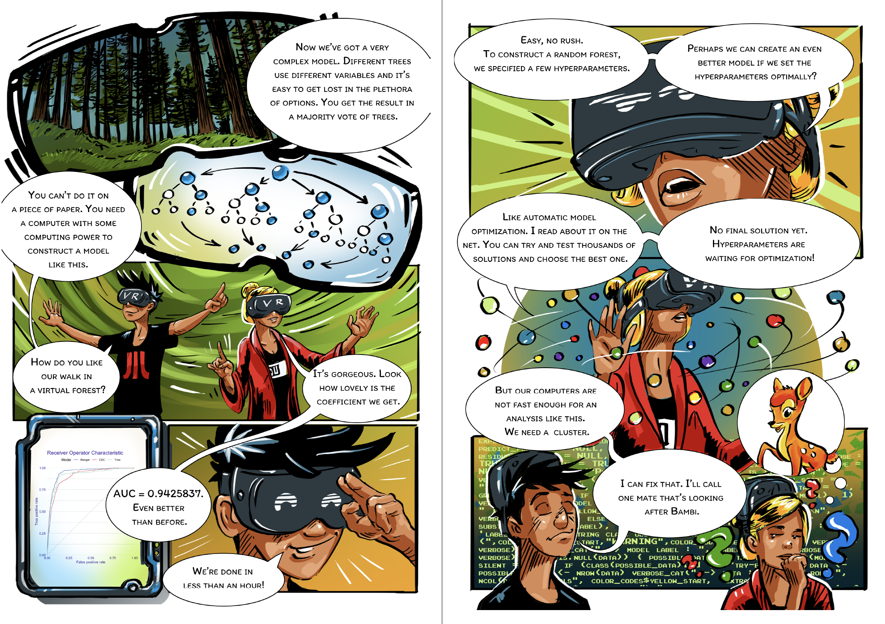
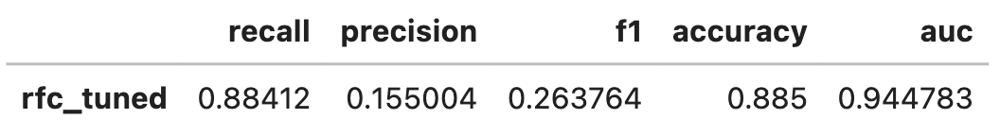
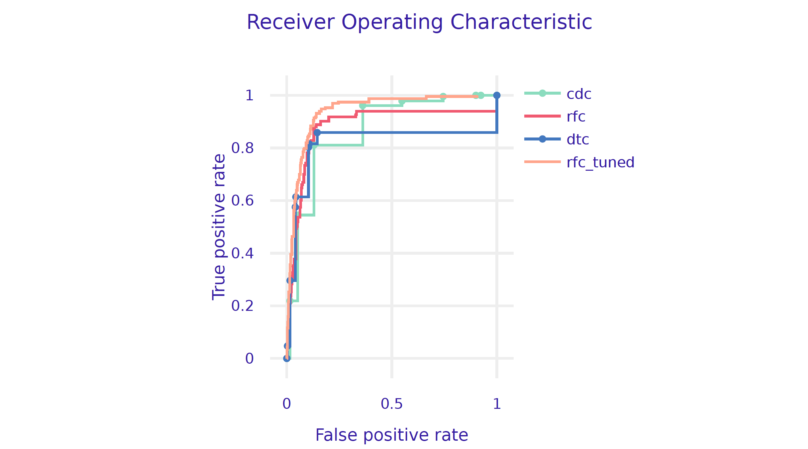
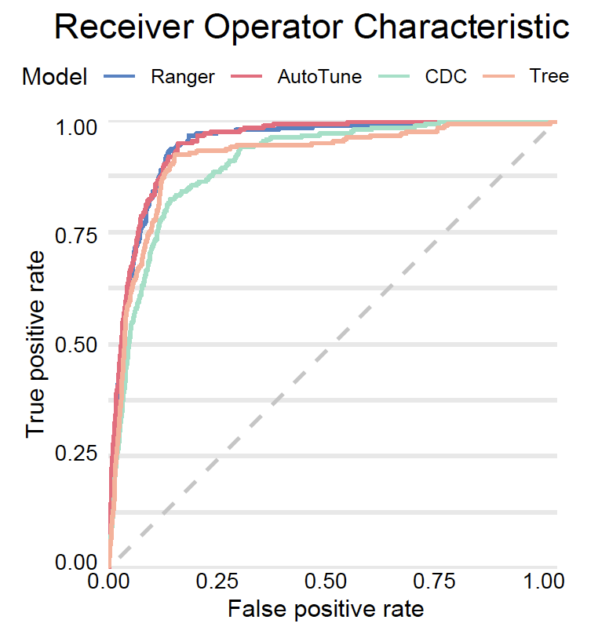

import scipy
from sklearn.model_selection import RandomizedSearchCV
search_space = {
'n_estimators': scipy.stats.randint(50, 500),
'max_depth' : scipy.stats.randint(1, 10),
'criterion' : ["gini", "entropy"]
}Step 5. Hyperparameter Optimisation

Machine Learning algorithms typically have many hyperparameters that specify a model training process. For some model families, like Support Vector Machines (SVM) or Gradient Boosting Machines (GBM), the selection of such hyperparameters has a strong impact on the performance of the final model. The process of finding good hyperparameters is commonly called tuning.
Hyperparameters can be tuned manually, and for many years this was a common practice based on individual experience with particular model families. However, with the increase in computing power, techniques that automatically tune hyperparameters are becoming more common. Here we will check if they help improve the quality of our model.
Each of the following steps can be implemented in many ways, so there is no single best way to tune models. We show an example framework for tabular data.
The general optimization scheme is described in Figure 1. Different model families have different sets of hyperparameters. We don’t always want to optimize all of them simultaneously, so the first step is to define the hyperparameter search space. Once it is specified, then tuning is based on a looped two steps: (1) select a set of hyperparameters and (2) evaluate how good this set of hyperparameters is. These steps are repeated until some stopping criterion is met, such as the maximum number of iterations, desired minimum model performance, or some increase in model performance.

Let’s focus more on the process of evaluating sets of hyperprameters. One of the key principles of machine learning is that the model should be verified on different data than that used for training. Even if we have separate data for training and final testing, we must not sneak a peek or use that test data when evaluating hyperparameters. We need to generate internal test data for the hyperparameter evaluation. This is often done using internal cross-validation.
The process of optimizing hyperparameters proceeds until a certain criterion is reached. Usually, it is determined by the budget for computation, and the budget is described by the maximum number of hyperparameters that can be tested, or the maximum computation time that can be used.
Python snippets
The most common way to perform a hyperparameter optimisation in Python is by using the RandomizedSearchCV class from module sklearn.model_selection.
First, we need to specify the space of hyperparameters to search. Not all hyperparameters are worth optimizing. Let’s focus on three for the random forest algorithm: number of trees, max depth of a tree and the spliting critera.
For automatic hyperparameter search, it is necessary to specify: (1) search strategy (below it is the random search), (2) family of models to be tested, (3) definition of space for hyperparameters, (4) a procedure to evaluate the performance of the proposed models (below it is the AUC determined by 5-fold cross-validation), (5) a stopping criterion (below it is 10 evaluations).
model_rfc_tuned = RandomizedSearchCV(
estimator=RandomForestClassifier(random_state=0),
param_distributions=search_space,
scoring="roc_auc",
cv=5,
n_iter=10,
refit=True,
random_state=0
)Now we are ready to fit parameters in this pipeline. As usual in can be done with fit() method. After the tuning the best identified hyperparameters cna be extracted from the best_params_ field.
model_rfc_tuned.fit(covid_spring.drop('Death', axis=1),
covid_spring.Death)
model_rfc_tuned.best_params_
# {'criterion': 'gini', 'max_depth': 6, 'n_estimators': 242}Moreover, some algorithms, like random forests, are not very tunable. Still, we had to try!
There is, of course, no guarantee that the tuner will find better hyperparameters than the default ones. But in this example, the tuned model is better than all other models that we have considered so far. Let’s see how much. We need a dalex wrapper.
explainer_rfc_tuned = dx.Explainer(
model=model_rfc_tuned,
data=covid_summer.drop('Death', axis=1),
y=covid_summer.Death,
label='rfc_tuned'
)We can calculate and compare the model performance/AUC on validation data and then compare ROC curves for various models.
performance_rfc_tuned = explainer_rfc_tuned.model_performance(
model_type="classification", cutoff=0.1)
performance_rfc_tuned.result
Let’s plot all ROC curves in a single plot.
performance_cdc.plot([performance_rfc, performance_dtc,
performance_rfc_tuned], geom="roc")
R snippets
The example below uses the mlr3 package. Other interesting solutions for hyperparameter optimization in R are h2o and tidymodels.
library("mlr3tuning")
library("paradox")
search_space = ps(
num.trees = p_int(lower = 50, upper = 500),
max.depth = p_int(lower = 1, upper = 10),
minprop = p_dbl(lower = 0.01, upper = 0.1),
splitrule = p_fct(levels = c("gini", "extratrees"))
)For automatic hyperparameter search, it is necessary to specify: (1) a procedure to evaluate the performance of the proposed models (below it is the AUC determined by 5-fold cross-validation), (2) a search strategy for the parameter space (below it is a random search), (3) a stopping criterion (below it is the number of 10 evaluations).
tuned_ranger = AutoTuner$new(
learner = covid_ranger,
resampling = rsmp("cv", folds = 5),
measure = msr("classif.auc"),
search_space = search_space,
terminator = trm("evals", n_evals = 10),
tuner = tnr("random_search") )Once the optimization parameters have been defined, we can turn on their optimization with the train method, just as with any other predictive model in mlr3.
tuned_ranger$train(covid_task)
tuned_ranger$tuning_result
# num.trees max.depth minprop splitrule
# 1: 264 9 0.06907318 gini
# learner_param_vals x_domain classif.auc
# 1: <list[4]> <list[4]> 0.9272979There is, of course, no guarantee that the tuner will find better hyperparameters than the default ones.
model_tuned <- explain(tuned_ranger,
predict_function = function(m,x)
m$predict_newdata(newdata = x)$prob[,1],
data = covid_summer,
y = covid_summer$Death == "Yes",
type = "classification", label = "AutoTune")We can calculate and compare the model performance/AUC on validation data and then compare ROC curves for various models.
(mp_tuned <- model_performance(model_tuned))
# Measures for: classification
# recall : 0.02575107
# precision : 0.4
# f1 : 0.0483871
# accuracy : 0.9764
# auc : 0.9447171And finally we plot all ROC curves.
plot(mp_tuned, mp_ranger, mp_tree, mp_cdc, geom = "roc")